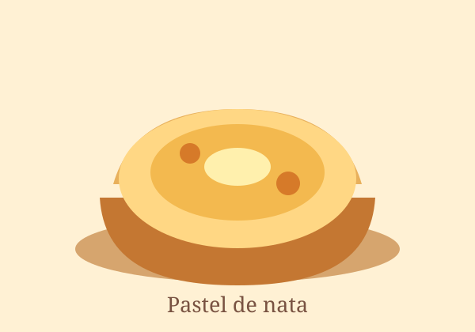
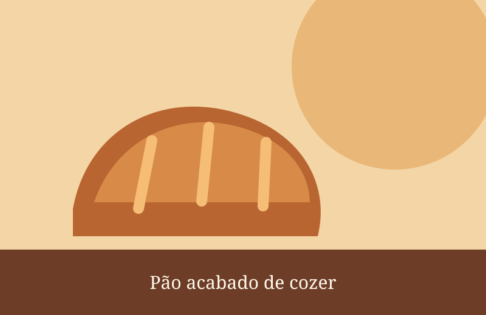
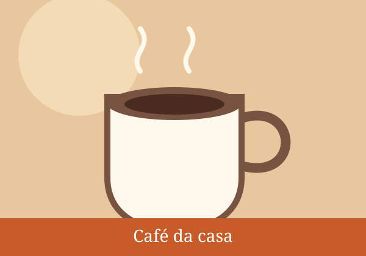
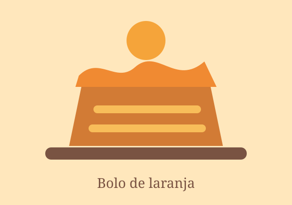

Receitas de sempre
Pastéis de nata, bolos caseiros e sabores que fazem parte da nossa memória.
Desde 1987 · Tradição portuguesa
Na Pastelaria Pão Quente, todos os dias começam com pão acabado de cozer, café aromático e receitas feitas com tempo.

Feito com cuidado

Pastéis de nata, bolos caseiros e sabores que fazem parte da nossa memória.

Um espaço tranquilo para começar a manhã, conversar ou fazer uma pausa.

Produzimos em pequenas quantidades para servir qualidade e frescura.
Esperamos por si
Visite-nos de segunda a sábado, entre as 07:00 e as 19:00. Traga vontade de comer bem.